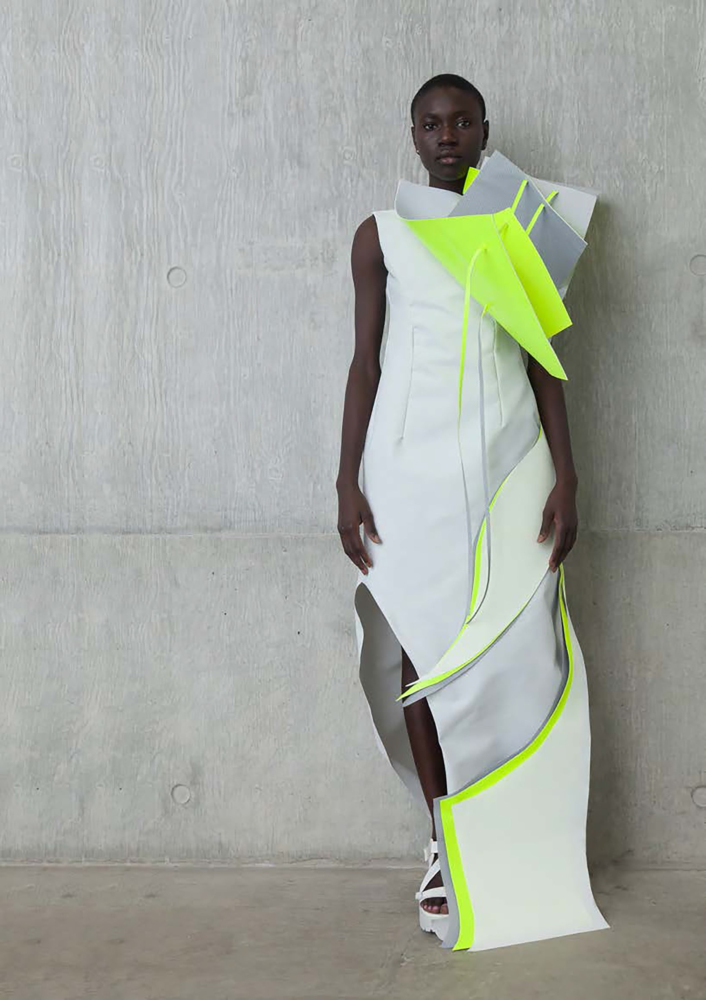
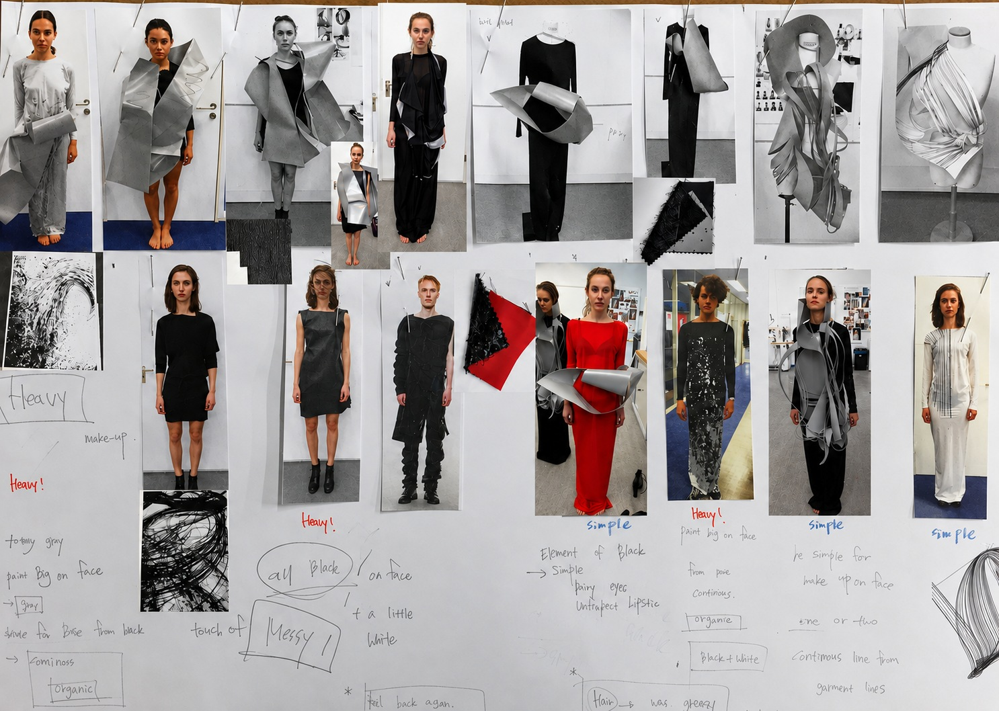
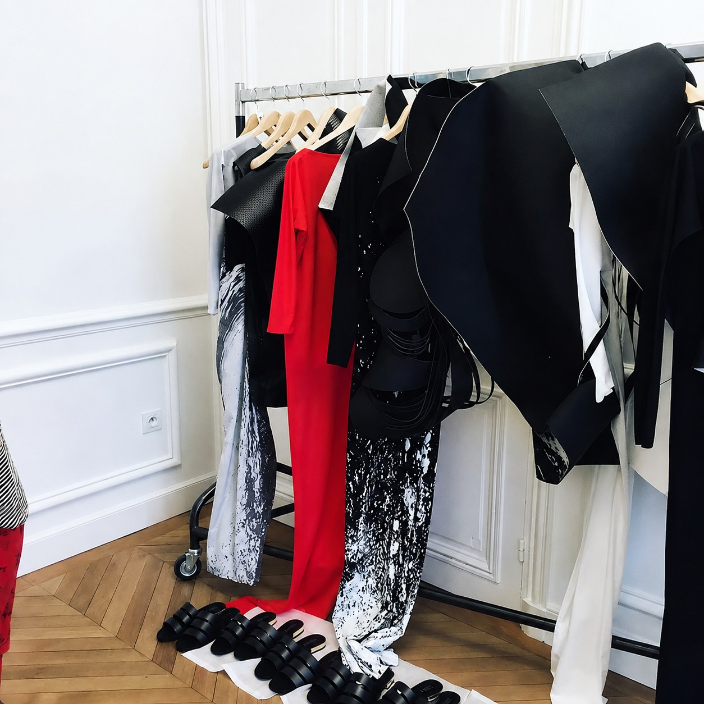

Stellar (Minseo) Kim
Concept-Led Designer-Researcher · Responsive Matter
Materials that sense.
Forms that transform.
Experiences that matter.
I design forms that respond to a person and transform, and I study what that transformation does to the person who meets it. The work has moved from the hand to textiles, and on to matter that answers a body.
I call the direction Sentient Aesthetics.

A single length of cloth worked over the stand until a volume stood on its own — the silhouettes came freely, straight from the hand.
Guggenheim
A collection built from the Guggenheim's organic layering — clean and modern, yet holding intricate detail. It was also where I began making material my own way: rubber tubing stitched into every seam, organza set between layers of cashmere so a coat could be worn reversed.


Rubber tubing stitched together with jersey in every seam: not decoration laid on top, but what gives the piece its structure. In the second version, organza is set between the seams with the raw edges facing outward, so the piece can be worn reversed.


Front and back read as two different garments: one clean, the other scooped deeply open.
Photography: Ho Chang
Undefined Shape and Refined Structure
A geometric exploration of three-dimensional form, questioning the relation between an undefined silhouette and a precise internal structure. Taking Metabolism — architecture conceived as something that grows and changes — the collection asks how structural logic can inhabit unexpected shapes, and how movement can be held inside a fixed form.

Metabolist architecture: floor plates stacked and offset so a building reads as something growing. What I took was the principle, not the look.

Paper holds an edge where cloth softens it, so each fold could be judged as structure before any fabric was chosen. Transform was one of the words I was working from at the time.

The first sheet still carries the words I wrote then: flexibility, transform, moving between two dimensions and three. The question was already open here.


Six looks, in the colours of the materials they came from: concrete, glass, stone and steel.


A reversible cashmere coat, closed by a woven strip drawn from Japanese architectural joinery.


The structure is in the fold and the seam, not in anything added underneath.


Seamed in a spiral and pin-tucked at each seam to force an angular hem, under a draped silk garza top.


The piece the collection was built toward: an extreme architectural structure that still respects the human form.
Photography: Ho Chang
Cutting
Sheet material bent into volume and holding it with nothing inside — no frame, no armature, only the way the sheet is bent. The collection asks how to do that in cloth: pieces cut and stitched so the assembly itself makes the structure, with folding worked into the method.

Frank Gehry's metal-clad architecture and Richard Serra's curved steel.

Each study set, photographed and reopened. What mattered was not the shape reached but which cut allowed the fold to hold.


Felt throughout, because felt takes a fold and keeps it. Unlined, and every edge a cut edge. The back is cut open and seamed to jersey: felt stands away from the body; jersey follows it.
Muse
Designing for one woman. I chose Daphne Guinness — refined but unmistakably strong, someone who wears bold metal — and answered her with material that belongs to building rather than to dress.


Wire rope and clamps, eye bolts, rings and tensioning fittings from London ironmongers. What interested me was the mechanism inside each part, and what it becomes once it sits on cloth instead of on a building.


The drape was found on the stand, drawn, and designed from there. Front and back are joined by a metal closure, with a larger fitting set into the join.
Movement in Space
A structure that opens and closes, and a garment that exists in more than one state. A flat panel rises into volume when drawn by strings and attaches to a plain dress with magnets — released, the dress is simple again. How far the strings are drawn is left to the wearer, so the form is set by the person inside it.

A transforming structure found in a book in the CSM library, opening across three stages. This is where the project began.

Geometry from a mathematics book, read not as formula but as mechanism, and rebuilt in paper.


No textile held the shapes the paper had made, so the garments were built in sunscreen fabric — an architectural shading material, sold by the roll but holding a crease the way paper does.




The front structure and the two pieces at the hem all attach with magnets; released, a plain long dress remains.


A different structure on the same principle, with the fringe detachable from it as well.
Expressive
Working against my own design DNA: check, punk, aggression, anything that felt oppressive. Each one held to the light long enough to find what was underneath it — check is weaving before it is a pattern, and under aggression is boldness, a gesture released freely rather than one meant to overpower. The collection is named for that distinction.

Monika Grzymala's tape installations. Aggression seeks to overpower; this seizes you. They are not the same thing.

Buildings chosen for their structure, not their surface: bands crossing bands, with depth and shadow doing what a printed check does flat.


An industrial sewing machine used as a drawing tool; the taping principle tested in paper; and check returned to its mechanism, yellow yarn woven irregularly through white cloth by hand.

Vintage garments bought for what they carried rather than for their cloth — including two oversized sweaters whose collars could be pulled up over the head, which I read as a way of enclosing a person.

The checked suit turned inside out. Reversed, a wide stripe stood out at the waist, and that became a graphic element in Look 2.

Sleeve and trouser leg from the checked suit combined several ways on the stand, some carried straight into a look, others printed and collaged back onto the figure.

Seven looks drawn, three made — one carrying the stitched line, one the woven check, one the taping.


Red thread stitched from the top of the garment to the hem, the density increasing as it descends until the lines read as a plane. The machine used the way a pencil is.


The grid panel is a plastic mesh sold as a craft material — a check made by weaving rather than printed on.


Strips cut and worked across the body the way tape crosses a wall: taut where they hold, long where they do not.
Freedom in Disorder
A pile of discarded garments and no new material. What could be made was decided by what was in the pile — the reverse of every other project here, and the only time I worked by reconstruction rather than construction.


Hazardous
Designed in the spirit of Lanvin, for a woman whose beauty is displayed on her own terms rather than for anyone's gaze. The premise: that what reads as dangerous and unattractive can be turned into something compelling. Every material was made before anything was drawn.

Photographs of the 2011 Tōhoku tsunami, with Hokusai's Great Wave. What I took was structural: how sheet material tears rather than cuts, how a surface holds the record of the force that moved it.

Klimt's Judith as the muse. Exposed, but not for anyone's gaze.

Conventional print has never much appealed to me — an image sitting flat on cloth. I photographed surfaces that already carried texture, then printed onto sponge and neoprene rather than silk, and set metal into the printed cloth.

Structural, rough, bold: made to see how far a surface could be disturbed and still hold.

Silhouette was found on the stand with the made materials, not drawn first.


Eighteen looks drawn, three made.

What stands off the body on a form does not always stand off a person. Most of the proportion changes were made here.


A woven stripe with a rough hand, its ends already fraying — left as they were, since they belonged to what the collection was about.


Neoprene printed with a photograph of split bark and moss, then hand-set with gold metal. Neoprene took the print more sharply than sponge, and its body made it right for building volume. The print begins as a photograph of a surface split open and ends as a panel with metal driven through it.


No print and no hardware: the look that shows what the silhouette does once the surface work is taken away.
Joie de Vivre
Emotion into form, and freedom into gesture. Drawing on Heather Hansen's kinetic drawings and the expressiveness of Pina Bausch, I drew on the floor with my whole body; the charcoal residue left behind became the prints, and the drawn lines, slashed and pinned, became the silhouettes. Sculptural outer pieces stand against the fluid jersey beneath them.
In the garments those pins are magnets: release them and each outer piece lies flat as a rectangle; join them and the same volume rises. The free spirit runs through every layer — the drawing, the print, the silhouette, and the face. Each piece is the joy of movement, held. The collection was not made for one gender, and male dancers were part of the presentation.


Charcoal drawn on the floor with the whole body, and the residue it left behind photographed and worked up into prints.

The first attempt at full size came out closer to eveningwear than to anything I wanted, so the lines were reduced and the work moved to a fraction of the scale.


The make-up was worked out look by look, carrying each look's own print or the colours of the collection onto the face.


One look was remade in soft cloth from exactly the same pattern, and came out different enough to enter the collection on its own.


Every outer panel is cut as a rectangle. What makes them different looks is where the magnets sit and where the panel is slashed; released, each returns to a flat rectangle.


The same line worked two ways: cut out of the outer piece, and bonded onto the jersey beneath it.

Not a fashion show. The dancers were given a set of keywords and moved freely, engaging with each other as they went.


Photographed at the film shoot, separately from the Paris presentation and directed to a different concept.

The Paris presentation was the joy itself; this is the way to it — difficulty worked through, then left behind for somewhere better. That is what joie de vivre means to me. Film by Studio Julius Thissen; hair and make-up by Vannessa Chan.

The only time the collection is seen off the body: rectangles of cloth, waiting for the magnets to be closed.

Transformation in the Material
Making the material do what my hands had been doing. Shape-memory alloy moves one way only and stays where it lands; liquid crystal elastomer was the first material that transformed and returned, and printing it directly onto textile placed it exactly where the structure needed it. Throughout, the question was the same: which geometry decides the transformation.

The mechanism I proposed to a research centre working across design and engineering: a condition is sensed, a heating element responds, the form changes, and it returns as it cools.

The alloy comes as straight wire, which could not hold the folding structure I intended. I drew zigzag geometries and had forming jigs made to those drawings — making the material follow the structure rather than the other way around.

The fold was designed in paper first, then built in cloth with the alloy running along the fold lines, so structure and actuator share one geometry.

The engineering lab developed the formulation; I mixed to that ratio and printed across a range of fabrics, choosing on adhesion and on how effectively the printed line folded.


Spacing and offset varied step by step, to find how far printed geometry alone governs the direction and degree of the fold.
Sped up; the change takes about twenty seconds, and it does not come back.
The cloth lifts into a repeating wave as the plate heats, and lies flat again as it cools.
The same material, a different printed geometry: here the sheet curls right over.
Structure as Sensor
A wearable sensor in which the textile structure, rather than the material, is the sensing mechanism. It picks up the breath not through how much a material stretches but through the change in contact area that structure creates — which makes form, not material, the design variable.

Three interweaving patterns — zigzag, moss, pile — each in vertical and horizontal layout, so form could be isolated as the variable and set against sensing performance.

As the chest expands, the inner filler and the outer pattern press against one another and the area where they touch changes. Inner and outer were designed together.

Three separable layers, so any combination can be exchanged without remaking the belt.

A single continuous conductive thread runs from the rubber to the snap interface, so the electrical path never breaks at a joint.

The board folds inside the pattern body, enclosed by the structure rather than mounted on top of it.

Every component detachable and adjustable, so the device can be reconfigured rather than rebuilt — and washed or replaced part by part.


Carried to a working wireless prototype and validated in wear. No separate sensing element was added: the structure itself is the sensor.
Now —
Responsive Matter
Form that senses a person and transforms in answer. The work runs along two axes: the external, where responsive materials sense conditions in the environment and transform to protect the body; and the internal, where form meets a person's state — anxiety, sleeplessness, cognitive overload — and answers it. I begin with cognitive arousal, the moment a clouded mind wakes and attention is drawn, and follow that principle outward from the body toward the space around it.
Sentient Aesthetics: form that senses, and the aesthetic judgment of what that sensing does to the person who meets it. Not devices, but experiences — ones that happen to be beautiful.